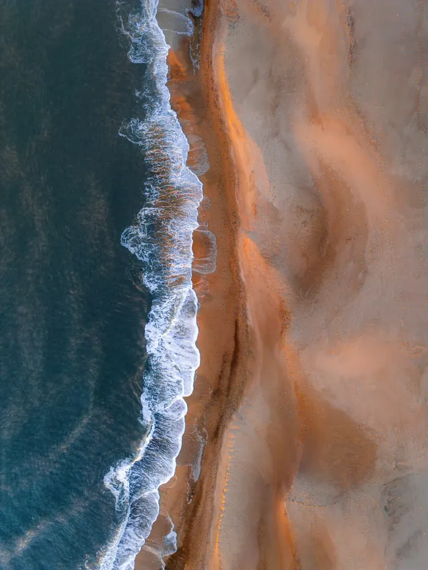

Cancún, located on Mexico's Caribbean coast in the state of Quintana Roo, runs on a simple calendar: a dry, comfortable season from December through April, a hot and wet summer with hurricane risk from June through October, and two shoulder months — May and November — that reward travelers willing to look past the headlining months.
When to visit is not just a weather question. It is about crowds, resort pricing, beach conditions, and what matters most to your particular trip. This guide covers all of it, month by month.
Quick Answer
December through February is the best window for most travelers — dry, manageable heat, low humidity, and outside Atlantic hurricane season. January and February offer excellent beach conditions with fewer crowds than the spring break period. November can offer shoulder-season value as Atlantic hurricane activity generally declines, although hurricane season officially continues through November 30 — lower prices and improving weather make it a solid pick. August through October carries the highest hurricane risk and also brings the highest heat, humidity, and sargassum concentrations.

Cancún's Two Seasons
Dry Season
Sunny, low humidity, minimal rainfall. Outside Atlantic hurricane season. January–February: fewest crowds, lowest sargassum risk. December and March–April: highest prices and demand (Christmas/NYE and spring break).
Shoulder Months
November: hurricane activity typically winding down (season officially ends Nov 30), lower prices, improving weather, lower sargassum. May: sargassum season may already be starting by this month (peak typically July–September); before school holiday demand; decent value window with some early rain risk.
Hurricane Season Peak
Statistically highest storm risk. High heat and humidity. Sargassum typically at heaviest concentrations. Some resorts offer lower pricing to compensate. Travel insurance is strongly recommended; verify coverage terms.
Dry Season: December through April
This is Cancún's main tourist window. December brings the Christmas and New Year's surge — the most expensive two weeks of the year — followed by a brief lull in early January before demand builds again through spring break in March. Within the dry season, January and February are the strongest months for a beach-focused trip: consistently dry weather, comfortable temperatures, low humidity, minimal sargassum, and genuine respite from the spring break crowds.
March and early April coincide with US university spring break — the Hotel Zone is at or near maximum capacity, resort pricing peaks, and the Km 9 entertainment district is extremely busy. If your goal is a relaxing beach vacation, this period requires either planning well in advance and accepting premium pricing, or deliberately choosing a northern Hotel Zone property away from the nightlife concentration.
Rainy Season and Hurricane Season: June through November
June marks the onset of the Atlantic hurricane season and Cancún's rainy season. The pattern for most of the summer is afternoon and evening showers, with mornings often sunny. July and August carry school holiday demand from both US and Mexican families, moderating the low-season pricing. September and October are the highest-risk months for tropical storm and hurricane activity — and the least popular with international travelers for good reason.
Atlantic hurricane season runs June 1 through November 30. Cancún is on Mexico's Caribbean coast within the Atlantic hurricane basin. The statistical peak is around September 10. Cancún has taken direct hurricane hits — most notably Hurricane Wilma in October 2005. Travel insurance covering trip cancellation, interruption, and evacuation is strongly recommended for any June–November travel. Source: NOAA National Hurricane Center — Tropical Cyclone Climatology.
Month-by-Month Breakdown
| Month | Typical Conditions | Crowds | Hurricane Risk | Sargassum | Best For |
|---|---|---|---|---|---|
| January | ☀ Dry, low humidity; comfortably warm | Low–Moderate | Outside official Atlantic season | Low | Best value dry season, beach, families |
| February | ☀ Dry, comfortable temperatures, low humidity | Low–Moderate | Outside official Atlantic season | Low | Excellent weather, low crowds, couples |
| March | ☀ Dry, warm and brightening | Very High | Outside official Atlantic season | Low–Moderate | Spring break — high energy, premium pricing |
| April | ⛅ Mostly dry, increasingly warm | High → Moderate | Minimal | Moderate | Post–spring break window (late Apr) |
| May | ⛅ Some rain begins, hot and humid | Low–Moderate | Low | Moderate | Shoulder value, before school holidays |
| June | 🌧 Hot and humid, afternoon showers | Low | Moderate | Moderate–High | Budget travel — travel insurance essential |
| July | 🌧 Hot, humid, frequent rain | Moderate | Moderate | High | School holiday families — travel insurance essential |
| August | ⚡ Hot and humid, elevated storm risk | Moderate | High | High | Not recommended without full trip coverage |
| September | ⚡ Storm peak period; highest-risk month | Very Low | Highest | High | Avoid or only with comprehensive trip insurance |
| October | 🌧 Cooling slightly, hurricane season still active | Low | Moderate–High | Moderate–High | Budget only — travel insurance essential |
| November | ⛅ Improving, less humid, comfortable | Low–Moderate | Low — season officially ends Nov 30 | Low–Moderate | Excellent shoulder: low prices, good weather |
| December | ☀ Dry season, comfortably warm | Very High | Very Low | Low | Christmas/NYE festive atmosphere; shoulder (non-holiday dates) |
Conditions column describes qualitative seasonal weather patterns for the Cancún/Hotel Zone area. No specific temperature dataset or measurement type is cited. Actual temperatures and conditions vary by year. Sargassum levels shown are general historical patterns; the Great Atlantic Sargassum Belt's biomass peak shifts between years, and local beach accumulation depends on currents, winds, and geography — no month can be guaranteed sargassum-free. Hurricane risk levels are based on historical frequency patterns, not predictions for specific trips.
Best Time by Traveler Type
| Travel Priority | Best Months | Main Advantage | Main Tradeoff |
|---|---|---|---|
| Beach vacation | January – February | Dry, comfortable, low sargassum, low crowds | Moderate peak pricing |
| Family with children | January – February, late November | Settled weather, manageable heat, calm seas | Jan–Feb: moderate pricing; Nov: some residual risk |
| Lower crowds | January, February, November | Resort capacity well below spring break levels | Jan–Feb: moderate peak pricing |
| Budget travel | May, November, early June | Meaningfully lower resort rates than peak season | Some rain risk; Jun: hurricane season begins |
| Lively atmosphere | March (spring break), December (Christmas/NYE) | Maximum energy, events, nightlife activity | Highest prices and crowds of the year |
| Lower historical tropical-cyclone exposure | December – May | Outside the Atlantic hurricane season window (June 1 – Nov 30) or in the low-probability shoulder months | Dec and Mar–Apr: highest prices; May: wet season onset |
| Shoulder value + good weather | November (mid–late) | Hurricane activity typically winding down (season officially through Nov 30), comfortable weather, lower prices | Atlantic season technically active until Nov 30 |
Budget estimates referenced here are relative comparisons between seasons, not verified market averages. Actual resort pricing varies by travel dates, booking platform, resort tier, and availability.
Sargassum and Beach Conditions
Sargassum — naturally occurring brown seaweed driven by Atlantic Ocean currents — is one of the most discussed topics for Caribbean beach trips, and for good reason. It has affected Cancún and the broader Riviera Maya significantly in recent years. Understanding it honestly helps set accurate expectations.
What sargassum actually is
Sargassum originates from what researchers have identified as the Great Atlantic Sargassum Belt (GASB) — a band of seaweed stretching across the equatorial and tropical Atlantic — and is transported by currents and wind onto Caribbean beaches. It is not a local water quality issue. The GASB has expanded significantly since around 2011, driven by factors including elevated nutrient levels and shifts in Atlantic circulation patterns (source: NASA Earth Observatory, "Sizing Up the Sargassum Belt," July 2026). When fresh it is relatively harmless; when it accumulates and rots, it produces hydrogen sulfide gas with an unpleasant smell. Large accumulations can make a beach section unpleasant and obscure the water clarity that Cancún is known for.
When does it affect Caribbean beaches?
Sargassum can affect Cancún's beaches from as early as April through as late as October, though the timing and intensity vary substantially from year to year. The Great Atlantic Sargassum Belt's seasonal biomass peak itself shifts year to year — NASA Earth Observatory reported the GASB reached its 2026 basin-wide seasonal peak in June, earlier than the July–September window historically cited for heavy Caribbean accumulation. Basin-wide peak biomass does not directly determine when any specific beach will see accumulation; local currents, wind patterns, and coastal geography all influence where and when seaweed actually washes ashore. No month between April and October can be reliably guaranteed sargassum-free.
How it affects the Hotel Zone
The northern Hotel Zone (roughly Km 1–8, near the Convention Center and northern resort clusters) tends to receive less sargassum than the middle and southern sections of the strip, partly because of different current exposure. Isla Mujeres, accessible by ferry from Puerto Juárez, can also be less affected in some years. Resorts hire staff to clear sargassum from their beach sections on a daily basis, which improves the experience compared to unmanaged shorelines, but this is not a guarantee of clear water.
If a pristine beach is essential to your trip, check recent traveler reports for your specific resort section in the weeks before departure. Social media groups focused on Cancún conditions are often the most current source for real-time sargassum status.
Planning for sargassum: The Cancún Travel Guide covers which sections of the Hotel Zone are typically less affected and what to look for when evaluating resort beach access.
Spring Break and Holiday Crowds
Two crowd events define Cancún's demand calendar: spring break and the Christmas / New Year's holiday.
Spring Break (mid-March through early April)
US university spring break falls primarily in mid-March through early April, with peak weeks varying by institution. During this window, the Hotel Zone operates at or near maximum capacity. Resort prices increase significantly — in some cases substantially above already-elevated dry season rates. The Km 9 entertainment district (home to Coco Bongo and surrounding venues) is at its most crowded. Pool areas, beach sections, and restaurants at large resorts are extremely busy.
If your priority is relaxation, beach time, and value, the two to three weeks of peak spring break are not the right window. If you are traveling with college-age travelers for whom the atmosphere is part of the appeal, this is the season for it. The northern Hotel Zone tends to be less affected by the spring break energy than the middle Hotel Zone entertainment strip.
Christmas and New Year's (late December through New Year's)
The final two weeks of December carry the highest resort prices of the year. Advance booking is essential — popular properties fill months ahead for Christmas and New Year's dates. The holiday atmosphere can be appealing, but travelers seeking a quiet, affordable Christmas getaway should look at different dates or different destinations. Early December (before the holiday surge) and mid-January (after it subsides) are genuinely good-value entry points into the dry season.
Hotel Zone Considerations
The timing of your visit interacts with where you are staying within the Hotel Zone's 14-mile stretch:
- Northern Hotel Zone (Km 1–8): Closest to downtown and the ferry to Isla Mujeres. Generally quieter during spring break. Tends to be less affected by sargassum. Some of the larger family resort properties are concentrated here.
- Middle Hotel Zone (Km 8–16): The main entertainment district, most shopping malls (Forum by the Sea, La Isla Shopping Village), and the highest concentration of nightlife venues. During spring break and New Year's this area is at maximum energy and maximum pricing.
- Southern Hotel Zone (Km 16–25): More spread out, some quieter properties, less nightlife infrastructure. More exposure to open Caribbean and potentially more sargassum impact in affected years.
Choosing which part of the Hotel Zone to stay in? The Cancún Travel Guide explains the kilometer marker system and what each section of the strip offers.
Hurricane Season: What You Need to Know
Cancún's history with hurricanes is not hypothetical. Hurricane Wilma struck in October 2005 as one of the most powerful Atlantic hurricanes on record — it devastated the Hotel Zone's beaches and infrastructure, requiring a full-scale reconstruction. Hurricane Gilbert made landfall in 1988. The lesson from both is not that visiting Cancún is reckless, but that hurricane-season travel to the Caribbean requires proper preparation.
- No June–November trip is guaranteed storm-free. Historical frequency data indicates higher risk in some months but does not predict any specific trip. A September trip in a low-activity year can be uneventful; a May trip in a rare early-season year could theoretically face activity.
- Peak statistical risk is September. September 10 is the statistical peak of Atlantic hurricane activity (NOAA). September and October carry the highest storm probability for the Caribbean basin.
- Confirm your accommodation's severe-weather procedures before you travel. Monitor official forecasts from NOAA's National Hurricane Center and follow local emergency authority instructions if a storm threatens. Review cancellation and evacuation arrangements at the time of booking, and understand your travel insurance coverage and exclusions.
- Travel insurance covering trip cancellation, interruption, and evacuation is strongly recommended for any June–November travel. Verify that the policy explicitly covers weather-related events and named storms. Some policies exclude storms that have already formed at the time of booking — read the terms carefully.
- November risk is significantly lower than September–October. While November is technically still within the season, historical storm activity drops sharply in November. With travel insurance in place, mid-to-late November is a reasonable shoulder window.
Source: NOAA National Hurricane Center — Tropical Cyclone Climatology.
Activities and Excursions by Season
Cenote Swimming
The Yucatán Peninsula's freshwater cenotes — natural sinkholes connected to underground river systems — are accessible year-round and are arguably better in the dry season, when humidity and heat make cool underground swimming more appealing. Cenote water temperature stays relatively stable year-round. The main variable is crowd levels at popular sites like Cenote Ik Kil, which follows the same pattern as the Hotel Zone — lower in January–February, busiest during spring break.
Chichen Itzá and Mayan Sites
Chichen Itzá and other Mayan archaeological sites are open year-round. The practical consideration is heat and crowds. The dry season (December–April) has the most tourist traffic at the ruins. During summer months, the combination of intense heat and humidity at an open-air archaeological site can make extended visits challenging, particularly with children. Early morning visits are recommended year-round.
Snorkeling and Diving
The Caribbean water around Cancún, Isla Mujeres, and the nearby reef system (part of the Mesoamerican Barrier Reef) offers year-round diving. Water clarity is generally best during the dry season. Sargassum affects surface conditions more than underwater visibility, though heavy accumulations can make entry and exit more difficult. The whale shark season in the waters around Isla Holbox and Isla Mujeres typically runs approximately June through September, though peak timing and applicable regulations vary year to year — verify current season dates and rules with local tour operators before planning around this experience. Swimming with whale sharks is a world-class experience available during the rainy season that most tourists avoid.
Practical Booking Checklist
- Determine travel window and cross-reference hurricane season risk (June–November)
- If traveling June–November, purchase travel insurance before booking flights; verify weather event coverage
- Identify Hotel Zone kilometer position for any resort you are considering — it determines sargassum exposure, nightlife proximity, and spring break impact
- For best beach and weather: target January–February; book 3–5 months in advance for spring break and holiday dates
- For shoulder value: consider mid-November or early May; check recent sargassum reports in May
- Avoid spring break weeks if relaxation is the priority (mid-March to early April)
- Book round-trip flights and compare all-inclusive packages against separate hotel + meals for overall trip cost
- Confirm passport validity for Mexico travel; US citizens need a passport valid through the duration of stay
- Use only the authorized pre-paid transportation kiosks inside the CUN arrivals terminal — fares to Hotel Zone destinations are set in advance. Do not accept transportation from solicitors on the arrivals floor
- Build excursion costs into your total budget — Chichen Itzá, cenotes, and Isla Mujeres are not covered by the all-inclusive rate
Ready to Plan Your Cancún Trip?
Check entry requirements, compare Cancún to other Caribbean destinations, and estimate your all-inclusive trip cost with DreamVacati's free planning tools.
Cancún Travel Guide Mexico Travel Guide Budget PlannerFrequently Asked Questions
What is the best time to visit Cancún?
When is hurricane season in Cancún?
What is sargassum and when is it worst in Cancún?
Should I avoid Cancún during spring break?
Is November a good time to visit Cancún?
Is it worth visiting Cancún during the rainy season?
Explore the full Mexico and Caribbean planning resources from DreamVacati.
Sources: NOAA National Hurricane Center — Tropical Cyclone Climatology (nhc.noaa.gov/climo). NASA Earth Observatory — "Sizing Up the Sargassum Belt," July 2026, for Great Atlantic Sargassum Belt context. US State Department Mexico Travel Advisory (travel.state.gov). Seasonal patterns described as general climatological patterns; exact conditions vary by year and by specific beach and resort section. Last reviewed: November 2026.